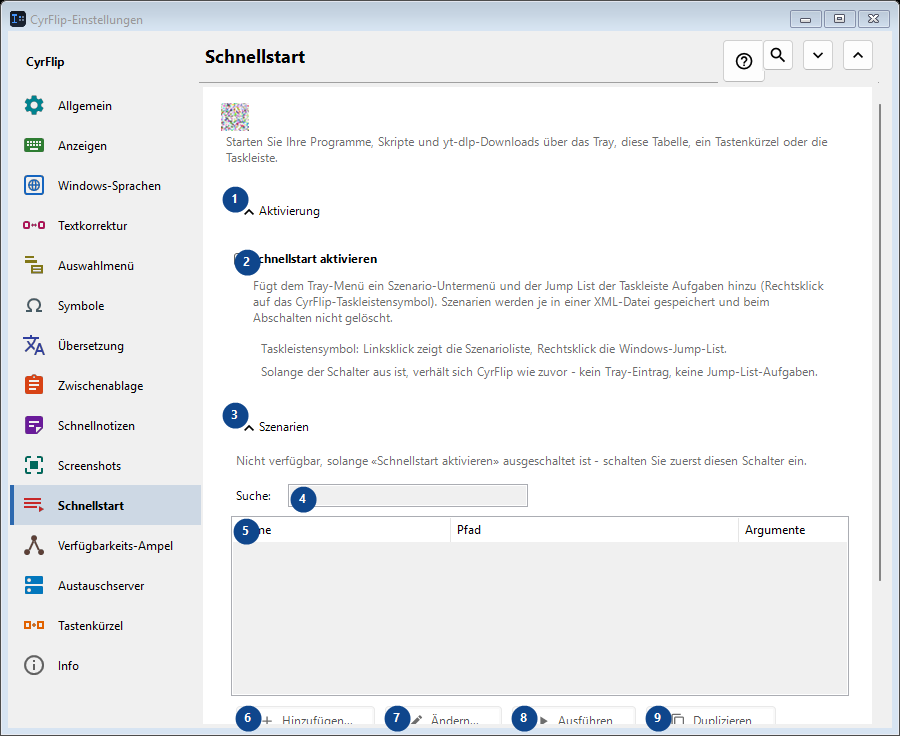
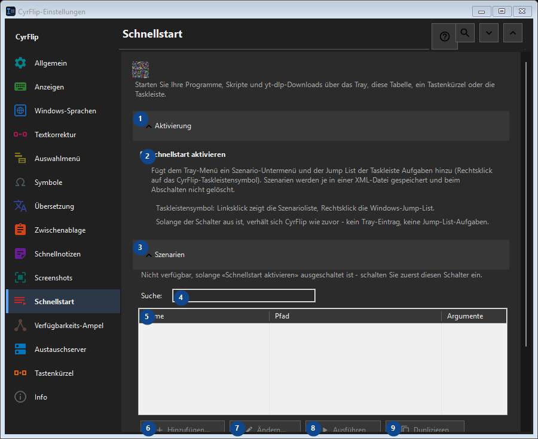

Schnellstart
Zweck
Starten Sie Ihre Programme, Skripte und yt-dlp-Downloads über das Tray, diese Tabelle, ein Tastenkürzel oder die Taskleiste.


Reihenfolge
Einstellungen gelten sofort. Eine feste Reihenfolge ist nicht nötig; nutzen Sie die Gruppen unten.
Elemente
1. Aktivierung
Nutzen Sie diesen Befehl für die genannte Aktion. Lesen Sie eine Bestätigung, bevor Sie zustimmen.
Ihre Tastenkürzel2. Schnellstart aktivieren
Fügt dem Tray-Menü ein Szenario-Untermenü und der Jump List der Taskleiste Aufgaben hinzu (Rechtsklick auf das CyrFlip-Taskleistensymbol). Szenarien werden je in einer XML-Datei gespeichert und beim Abschalten nicht gelöscht.
Ihre Tastenkürzel3. Szenarien
Nutzen Sie diesen Befehl für die genannte Aktion. Lesen Sie eine Bestätigung, bevor Sie zustimmen.
Ihre Tastenkürzel4. Suche
Nicht verfügbar, solange «Schnellstart aktivieren» ausgeschaltet ist - schalten Sie zuerst diesen Schalter ein. Dieses Element ist derzeit nicht verfügbar. Aktivieren Sie zuerst die Funktion oder wählen Sie einen Eintrag.
Ihre Tastenkürzel5. Schnellstart
Nicht verfügbar, solange «Schnellstart aktivieren» ausgeschaltet ist - schalten Sie zuerst diesen Schalter ein. Dieses Element ist derzeit nicht verfügbar. Aktivieren Sie zuerst die Funktion oder wählen Sie einen Eintrag. Name / Pfad / Argumente / Arbeitsordner / Admin / Kürzel
Ihre Tastenkürzel6. Hinzufügen...
Nicht verfügbar, solange «Schnellstart aktivieren» ausgeschaltet ist - schalten Sie zuerst diesen Schalter ein. Dieses Element ist derzeit nicht verfügbar. Aktivieren Sie zuerst die Funktion oder wählen Sie einen Eintrag.
Ihre Tastenkürzel7. Ändern...
Nicht verfügbar, solange «Schnellstart aktivieren» ausgeschaltet ist - schalten Sie zuerst diesen Schalter ein. Dieses Element ist derzeit nicht verfügbar. Aktivieren Sie zuerst die Funktion oder wählen Sie einen Eintrag.
Ihre Tastenkürzel8. Ausführen
Nicht verfügbar, solange «Schnellstart aktivieren» ausgeschaltet ist - schalten Sie zuerst diesen Schalter ein. Dieses Element ist derzeit nicht verfügbar. Aktivieren Sie zuerst die Funktion oder wählen Sie einen Eintrag.
Ihre Tastenkürzel9. Duplizieren
Nicht verfügbar, solange «Schnellstart aktivieren» ausgeschaltet ist - schalten Sie zuerst diesen Schalter ein. Dieses Element ist derzeit nicht verfügbar. Aktivieren Sie zuerst die Funktion oder wählen Sie einen Eintrag.
Ihre Tastenkürzel10. Entfernen
Nicht verfügbar, solange «Schnellstart aktivieren» ausgeschaltet ist - schalten Sie zuerst diesen Schalter ein. Dieses Element ist derzeit nicht verfügbar. Aktivieren Sie zuerst die Funktion oder wählen Sie einen Eintrag.
Ihre Tastenkürzel11. Nach oben verschieben
Nicht verfügbar, solange «Schnellstart aktivieren» ausgeschaltet ist - schalten Sie zuerst diesen Schalter ein. Dieses Element ist derzeit nicht verfügbar. Aktivieren Sie zuerst die Funktion oder wählen Sie einen Eintrag.
Ihre Tastenkürzel12. Nach unten verschieben
Nicht verfügbar, solange «Schnellstart aktivieren» ausgeschaltet ist - schalten Sie zuerst diesen Schalter ein. Dieses Element ist derzeit nicht verfügbar. Aktivieren Sie zuerst die Funktion oder wählen Sie einen Eintrag.
Ihre Tastenkürzel13. Exportieren...
Nicht verfügbar, solange «Schnellstart aktivieren» ausgeschaltet ist - schalten Sie zuerst diesen Schalter ein. Dieses Element ist derzeit nicht verfügbar. Aktivieren Sie zuerst die Funktion oder wählen Sie einen Eintrag.
Ihre Tastenkürzel14. Importieren...
Nicht verfügbar, solange «Schnellstart aktivieren» ausgeschaltet ist - schalten Sie zuerst diesen Schalter ein. Dieses Element ist derzeit nicht verfügbar. Aktivieren Sie zuerst die Funktion oder wählen Sie einen Eintrag.
Ihre Tastenkürzel15. Aus OneClickRunner importieren...
Nicht verfügbar, solange «Schnellstart aktivieren» ausgeschaltet ist - schalten Sie zuerst diesen Schalter ein. Dieses Element ist derzeit nicht verfügbar. Aktivieren Sie zuerst die Funktion oder wählen Sie einen Eintrag.
Ihre Tastenkürzel